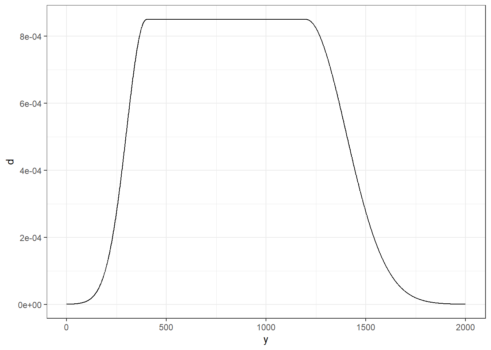
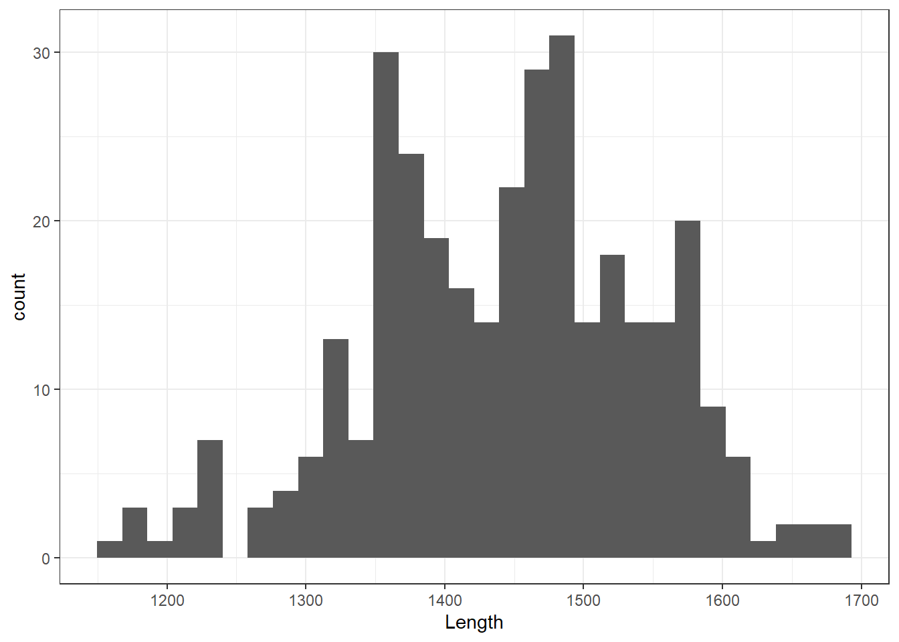
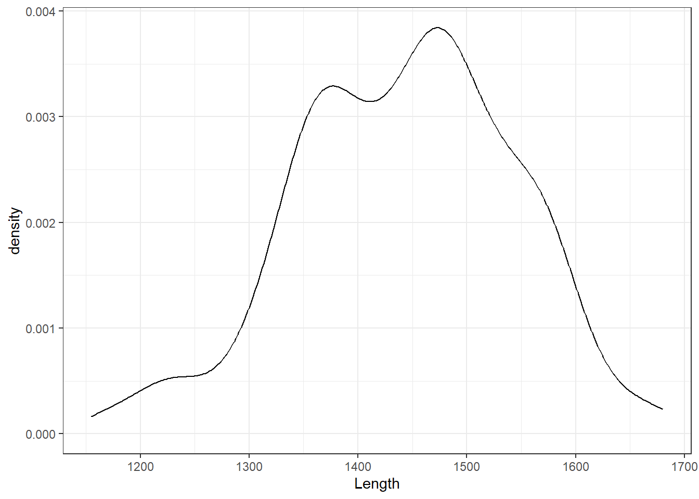
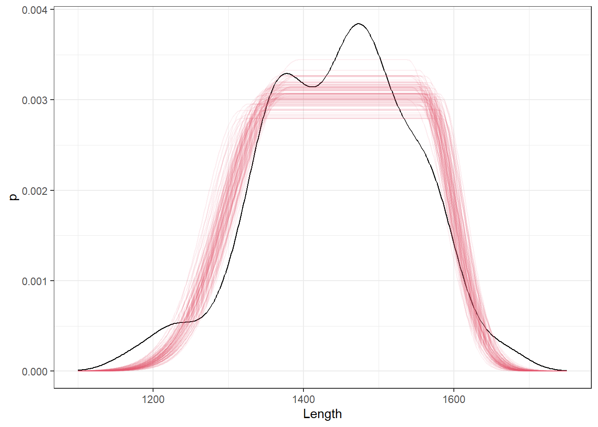
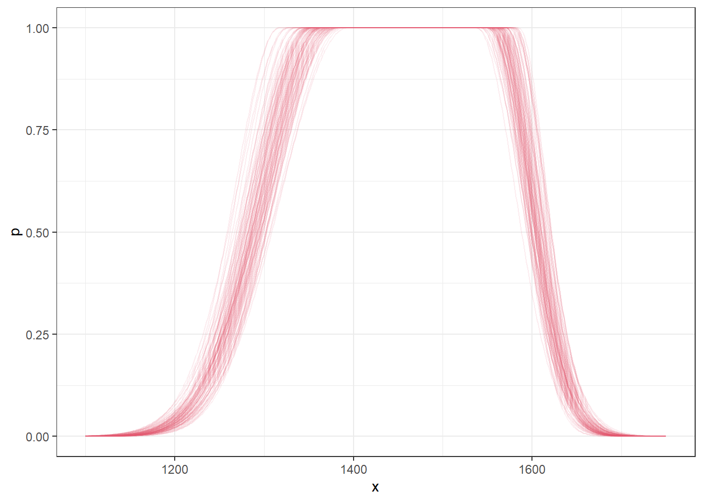

library(tidyverse)
library(rstan)
library(bayesplot)
library(posterior)
theme_set(theme_bw())Untitled
Show
c_plateau_gaussian_density <- function(delta, sigma1, sigma2) {
sqrt_2pi <- sqrt(2 * pi)
return(
(sqrt_2pi * sigma1 / 2) + (sqrt_2pi * sigma2 / 2) + 2 * delta
)
}
plateau_gaussian_density <- function(y, mu, delta, sigma1, sigma2) {
# Precompute repeated values
sigma1_sq <- sigma1^2
sigma2_sq <- sigma2^2
# Compute the normalization constant C
C <- c_plateau_gaussian_density(delta, sigma1, sigma2)
# Conditional structure for the piecewise density function
if (y < (mu - delta)) {
density <- exp(-0.5 * ((y - (mu - delta))^2 / sigma1_sq))
} else if (y <= (mu + delta)) {
density <- 1
} else { # y > mu + delta
density <- exp(-0.5 * ((y - (mu + delta))^2 / sigma2_sq))
}
# Return the normalized density
return(density / C)
}tibble(y = 0:2000) |>
rowwise() |>
mutate(
d = plateau_gaussian_density(y, 800, 400, 100, 200)
) |>
ggplot() +
aes(x=y,y=d) +
geom_line()
Load data
dat <- read_csv("Data/LHDC.csv") |>
filter(!(Population == "Southwest Atlantic" & !is.na(OWt))) |>
transmute(
Population,
Country,
Sex,
Stage = as_factor(LS_Score),
Length = TL
)New names:
Rows: 13495 Columns: 47
── Column specification
──────────────────────────────────────────────────────── Delimiter: "," chr
(8): ID, Source, Country, Species, Cap.gear, Sex, Population, Hemisphere dbl
(39): ...1, Cap.year, LS_Score, TL, sdtl, TWgt, sdtwgt, F.Ys.Wgt, D.T.Wg...
ℹ Use `spec()` to retrieve the full column specification for this data. ℹ
Specify the column types or set `show_col_types = FALSE` to quiet this message.
• `` -> `...1`Subset of data
dat_nz3 <- dat |>
filter(Population == "New Zealand" & Stage == "3" & Length < 1750) dat_nz3 |> ggplot() + aes(x = Length) + geom_histogram()`stat_bin()` using `bins = 30`. Pick better value with `binwidth`.
Original
stan_plateau_gaussian <- stan_model(file = 'plateau_gaussian_density.stan')recompiling to avoid crashing R sessionfit_gaussian_nz3 <- sampling(
stan_plateau_gaussian,
data = list( N = nrow(dat_nz3), y = dat_nz3$Length ),
chains = 4,
# iter = 2000,
# warmup = 500,
cores = 4,
control = list(adapt_delta = 0.95)
)
fit_gaussian_nz3Inference for Stan model: anon_model.
4 chains, each with iter=2000; warmup=1000; thin=1;
post-warmup draws per chain=1000, total post-warmup draws=4000.
mean se_mean sd 2.5% 25% 50% 75% 97.5%
mu 1460.77 0.23 8.96 1442.53 1454.97 1461.18 1466.67 1478.10
delta 99.72 0.29 10.26 80.18 92.83 99.58 106.23 120.38
sigma1 63.07 0.18 6.33 50.56 58.90 63.11 67.39 75.40
sigma2 38.63 0.12 5.15 29.18 35.10 38.42 41.76 49.64
C 326.89 0.32 13.19 302.19 318.07 326.65 335.22 354.20
lp__ -2069.18 0.04 1.46 -2072.87 -2069.88 -2068.85 -2068.12 -2067.36
n_eff Rhat
mu 1461 1
delta 1294 1
sigma1 1235 1
sigma2 1898 1
C 1660 1
lp__ 1325 1
Samples were drawn using NUTS(diag_e) at Fri Oct 11 01:30:47 2024.
For each parameter, n_eff is a crude measure of effective sample size,
and Rhat is the potential scale reduction factor on split chains (at
convergence, Rhat=1).Log density
stan_plateau_log_gaussian <- stan_model(file = 'plateau_gaussian_log_density.stan')recompiling to avoid crashing R sessionfit_log_gaussian_nz3 <- sampling(
stan_plateau_log_gaussian,
data = list( N = nrow(dat_nz3), y = dat_nz3$Length ),
chains = 4,
# iter = 2000,
# warmup = 500,
cores = 4,
control = list(adapt_delta = 0.95)
)
fit_log_gaussian_nz3Inference for Stan model: anon_model.
4 chains, each with iter=2000; warmup=1000; thin=1;
post-warmup draws per chain=1000, total post-warmup draws=4000.
mean se_mean sd 2.5% 25% 50% 75% 97.5%
mu 1460.73 0.23 8.51 1443.66 1455.16 1460.97 1466.60 1476.80
delta 99.32 0.27 10.55 78.76 92.42 99.27 106.03 120.68
sigma1 63.21 0.15 6.31 50.98 59.04 63.06 67.31 75.48
sigma2 38.84 0.14 5.17 29.63 35.23 38.55 42.02 49.78
C 326.54 0.30 13.57 300.85 317.53 325.94 334.99 354.41
lp__ -2069.21 0.04 1.44 -2072.79 -2069.93 -2068.89 -2068.16 -2067.39
n_eff Rhat
mu 1377 1.00
delta 1581 1.00
sigma1 1872 1.00
sigma2 1379 1.01
C 2030 1.00
lp__ 1243 1.00
Samples were drawn using NUTS(diag_e) at Fri Oct 11 01:33:29 2024.
For each parameter, n_eff is a crude measure of effective sample size,
and Rhat is the potential scale reduction factor on split chains (at
convergence, Rhat=1).Vectorised
stan_plateau_log_gaussian_vectorised <- stan_model(file = 'plateau_gaussian_log_density_vectorised.stan')recompiling to avoid crashing R sessionfit_log_gaussian_vectorised_nz3 <- sampling(
stan_plateau_log_gaussian_vectorised,
data = list( N = nrow(dat_nz3), y = dat_nz3$Length ),
chains = 4,
# iter = 2000,
# warmup = 500,
cores = 4,
control = list(adapt_delta = 0.95)
)
fit_log_gaussian_vectorised_nz3Inference for Stan model: anon_model.
4 chains, each with iter=2000; warmup=1000; thin=1;
post-warmup draws per chain=1000, total post-warmup draws=4000.
mean se_mean sd 2.5% 25% 50% 75% 97.5%
mu 1460.70 0.22 9.04 1442.40 1454.84 1460.84 1466.97 1477.99
delta 99.11 0.29 10.75 78.36 91.98 99.01 106.02 121.19
sigma1 63.18 0.17 6.64 50.31 58.72 63.08 67.43 76.68
sigma2 38.91 0.13 5.21 29.38 35.36 38.64 42.18 50.25
lp__ -2069.25 0.04 1.48 -2072.90 -2070.00 -2068.93 -2068.15 -2067.39
n_eff Rhat
mu 1656 1
delta 1418 1
sigma1 1511 1
sigma2 1565 1
lp__ 1381 1
Samples were drawn using NUTS(diag_e) at Fri Oct 11 01:34:48 2024.
For each parameter, n_eff is a crude measure of effective sample size,
and Rhat is the potential scale reduction factor on split chains (at
convergence, Rhat=1).MUCH FASTER!
Check output
g_dens_nz1 <- dat_nz3 |> ggplot() + geom_density(aes(x=Length))
g_dens_nz1
g_dens_nz1 +
geom_line(
data = fit_log_gaussian_nz3 |>
as_draws_df() |>
thin_draws(thin = 40) |>
expand_grid(x = seq(from=1100, to=1750, length=500)) |>
rowwise() |>
mutate(
p = plateau_gaussian_density(x, mu, delta, sigma1, sigma2)
),
mapping = aes(x = x, y = p, group = .draw),
alpha = .1,
col=2
)
Just multiply by the normalising constant to set height to 1
ggplot() +
geom_line(
data = fit_log_gaussian_nz3 |>
as_draws_df() |>
thin_draws(thin = 40) |>
expand_grid(x = seq(from=1100, to=1750, length=500)) |>
rowwise() |>
mutate(
p = plateau_gaussian_density(x, mu, delta, sigma1, sigma2) * C
),
mapping = aes(x = x, y = p, group = .draw),
alpha = .1,
col=2
)